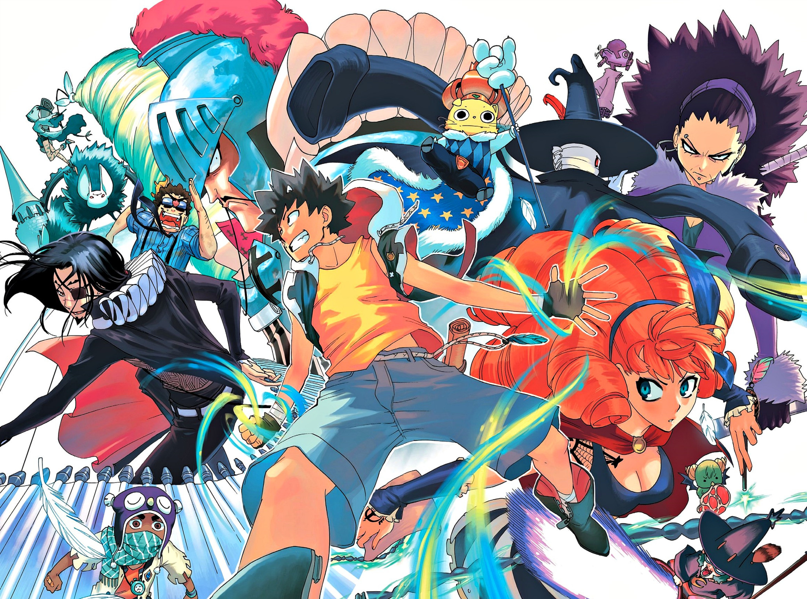

Sobre Radiant
Ubicada en en una novela de fantasia y magia, RADIANT trae al mundo lo mejor sobre historias en un formato de manga pero originario de francia
La micion del prota es: "Encontrar Radiant y destruirlo".
Esta historia ofrece muchas cosas muy interesantes, En el mundo de Radiant, monstruos llamados Némesis caen del cielo. Estos némesis contaminan todo lo que tocan. Las personas que sobreviven a su contacto son maldecidas, pero también obtienen la capacidad de utilizar un poder mágico conocido como "Fantasía", convirtiéndose así en hechiceros. Seth, el protagonista de Radiant, es un adolescente que ha sobrevivido a un ataque de un Némesis. Sueña con derrotar a todos los Némesis y traer la paz entre los hechiceros y el resto de la humanidad. Para hacerlo, tiene que encontrar el lugar de donde provienen los Némesis, el legendario Radiant, y destruirlo. Él y otros hechiceros viajan por la región en busca de Radiant mientras evitan a la Inquisición, una organización que caza a los hechiceros.
Ahora las portadas de los 16 volumens actuales del manfra (manga franses)
-----------------------------------------------------------------------LECTURA----------------------------------------------------------------------